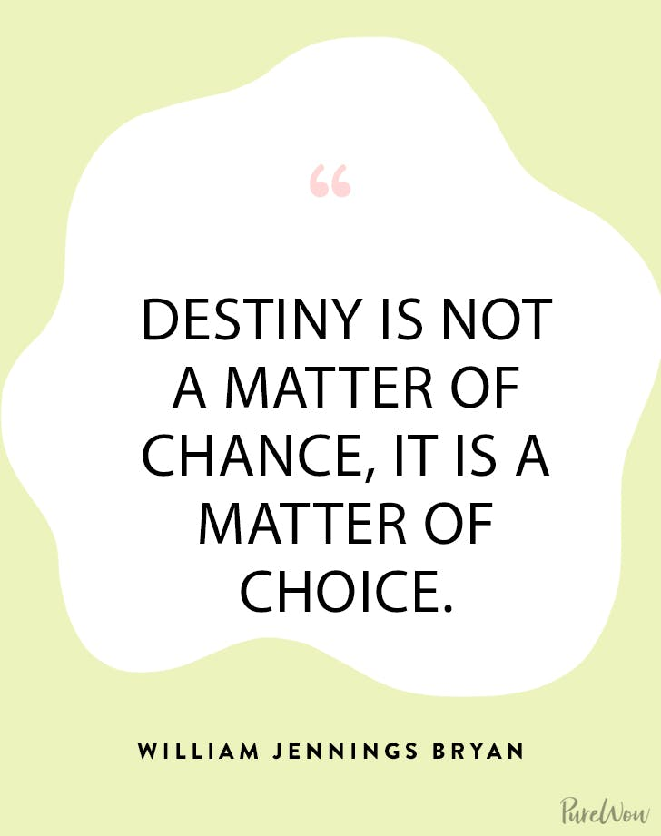
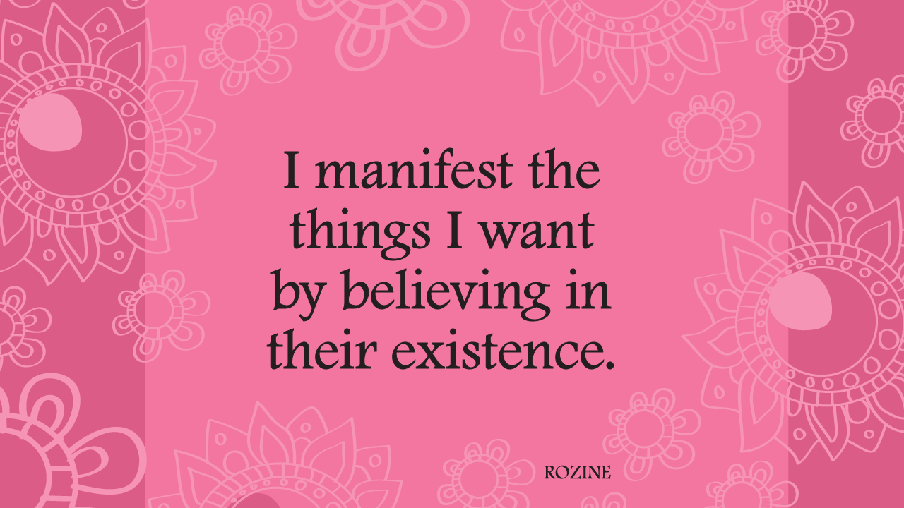
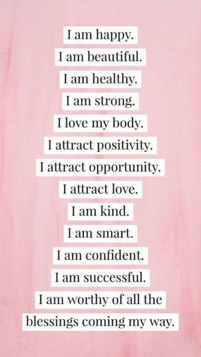

Positive ways for a healthier life
Manifestations and Affirmations are the hottest topics in today's world. Today we dig deeper on understaind what manifesting and afifrmations really are.
Manifesting-
The act of manifesting either has a ton of complicated rules or is whatever you want it to be, depending on who you ask. One popular TikTok claims that by simply coming across it, you’ve already manifested the video, and that in fact you’ve unconsciously manifested everything that has ever happened in your life (she quickly clarified in the comments that “nobody manifests their trauma”). Some say that there’s no “right” way to manifest while others claim it won’t work if you don’t “connect to the spiritual world” first. “Scripting” can either mean writing down your desire or writing down your desire precisely 33 times for three days, and then finishing it with “all this manifests and better,” just in case the universe decides to send even more than what you asked for.
Manifesting can also be surprisingly mathematical. There are special numbers associated with it — 1111 and 444 are “angel numbers” sent from the universe — as well as special sound frequencies for manifesting specific wants (528 hertz is the “love frequency”). There are manifesting-adjacent emoji (the Nazar Amulet, which in many cultures’ folklore is believed to ward off the evil eye, is a favorite) and guides on how to create your own sigils, a personal motif often used in witchcraft. The whole thing can feel vaguely Christian at times (the angels, for one), and at others be deemed demonic (e.g. witchcraft).
Like many New Age-y practices, manifesting comes with its fair share of paradoxes, where if you think about it too hard, none of it makes any sense. And yet its ideas have stood the test of time: The law of attraction, the belief that all thoughts eventually become things, and if you think positively, positive things will come to you, has existed since the New Thought spiritual movement of the 19th century.
 Affirmations-
People use affirmations for a variety of purposes. Generally speaking, affirmations are used to reprogram the subconscious mind, to encourage us to believe certain things about ourselves or about the world and our place within it. They are also used to help us create the reality we want—often in terms of making (or attracting) wealth, love, beauty, and happiness.
According to Walter E. Jacobson, M.D., there is value in affirmations of this nature, because our subconscious mind plays a major role in the actualization of our lives and the manifestation of our desires. What we believe about ourselves at a subconscious level, he says, can have a significant impact on the outcome of events.
At the simplest level, when we feel good about ourselves and have a positive attitude, our lives tend to run smoothly. Proponents of the “law of attraction” often refer to this as raising our vibration such that when our vibration is positive, positive things—such as financial abundance, love, and renewed health—are magnetically drawn to us.
Some affirmations we recommend:
Start with these affirmations eventually you will get creative and develop your own affirmations for your life!